Some Radio Mod examples for Android 5.1.1, 6.0.1, 8.0.0 and 8.1.0
Android 6.0.1, 8.0.0 and 8.1.0
The versions mentioned in fron of "the names", mean that of these mods there are several versions created based on the mentioned Android version. That does not mean they can only be used on that android version.
6.0.1 Bozzo's Clean Green
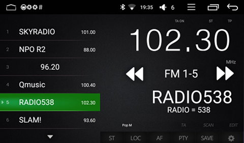
6.0.1/8.0.0 MarkMorto shades of grey
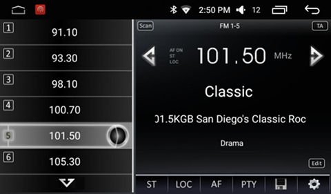
6.0.1 MarkMorto blue circular variant with stacked station names
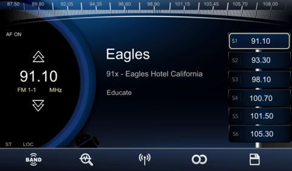
6.0.1 MarkMorto blue circular variant
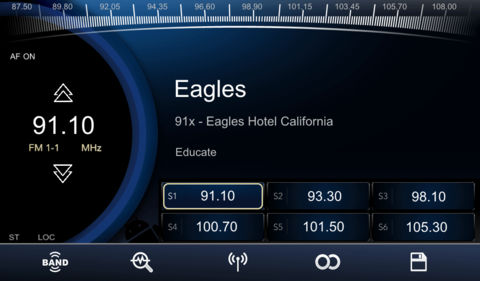
6.0.1 MarkMorto red circular variant
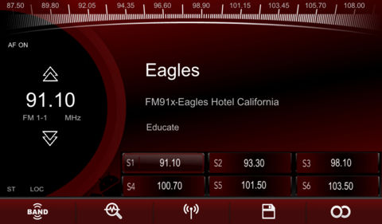
6.0.1 MarkMorto red metallic variant
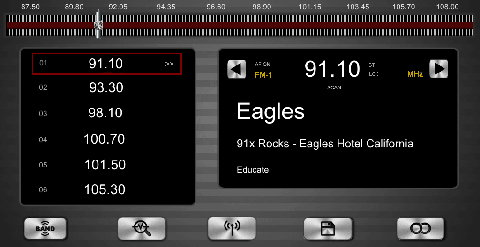
6.0.1 MarkMorto red variant
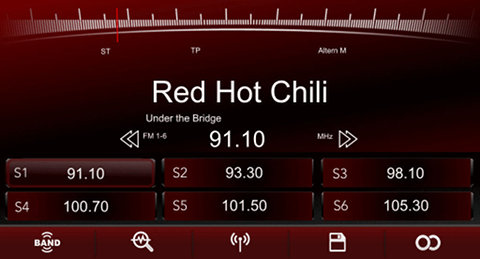
6.0.1/8.0.0/8.1.0 BW-RDS
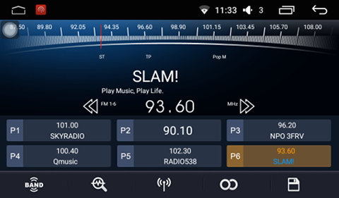
6.0.1 Blue-White (non-RDS)
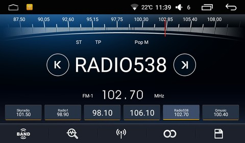
6.0.1 Red Sanangel Mod (non-RDS)
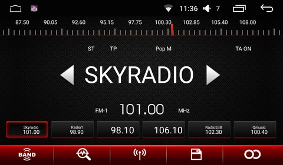
6.0.1 DarkBlue-Red Wilk7 Mod (non-RDS)
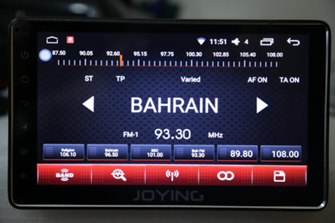
6.0.1 Thodai Mod (non-RDS)
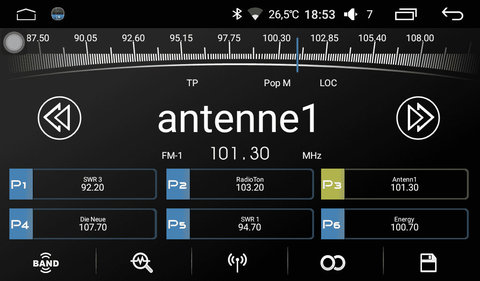
6.0.1 Krzycho26 Space Mod (non-RDS)
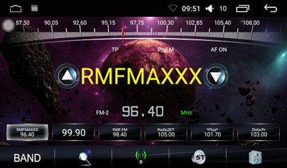
6.0.1 LJournets green (Skoda) Mod (non-RDS)
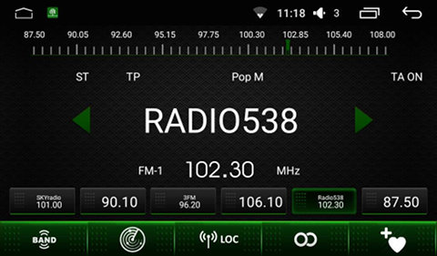
Android 5.1.1
Blue-White
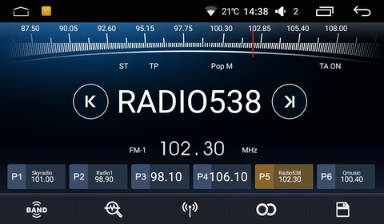
Green
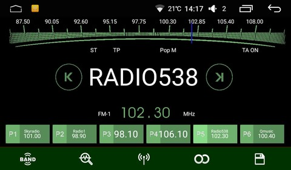
Orange
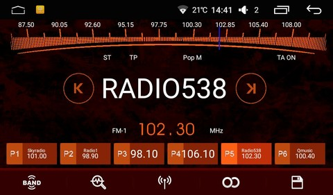
Red
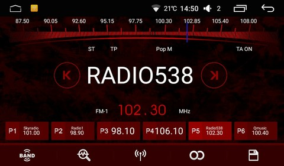
Red-White
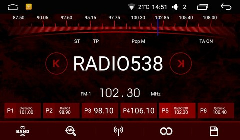
|